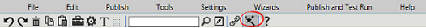
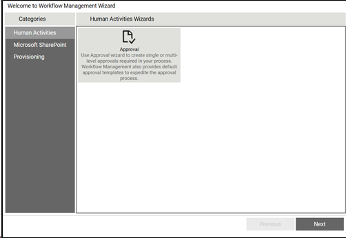
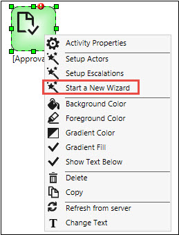
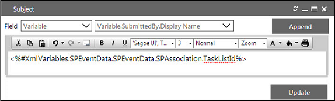
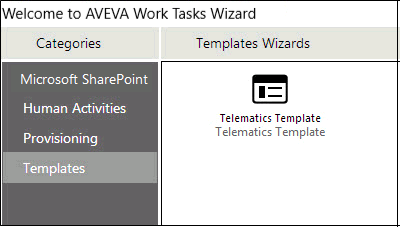

No
You can use the Human Activities (Approval) wizard to create single or multi-level approvals required in your process. AVEVA Work Tasks provides default approval templates to expedite the approval process.

You can invoke the Wizards in the Process Designer. You can access the wizard menu by any of the following methods:
Tool Bar Menu

Right-Click any Human Activity

To create single or multi-level approvals using the wizard:
Name: Name for the wizard.
Select Approver(s): Select the approver (s) from the User Lookup list. This field is mandatory.
Subject: Subject for the approval task. Open the Subject window. Select a variable, content, or XML variable, and then click Append. Variables other than user variables must be defined as variables in the workflow Start Activity. The following image shows the use of a variable in the subject line:

Body: Body for the approval task. Open the Body window. Select a variable, content, or XML variable, and then click Append. Variables other than user variables must be defined as variables in the workflow Start Activity.
Item is deemed to be approved when: Enter the percentage of approvals required to deem the task as approved. This is required to be set, if number of approvers exceeds 1.
Must all approvers act on the approval item: Select whether all approvers must act and respond to the approval task. If all approvers are not required to act, and the percentage in the above field is set to 100%, the task is deemed to be approved if 100% of the approvers who respond to the task approved it.
The process is approved
The process is rejected
There are not enough resources to acknowledge the process
The available set of actions are as follows:
Do nothing, I will add the step manually
Link to another wizard: This will bring up the selected wizard for defining the next set of activities
Link to an existing template: This will link the current approval activity to the set of activities specified in the selected template.
Link to an existing activity: This will allow you to link to one of the other activities existing in the workflow - this option is applicable only if the workflow has a process defined and it is being modified.
Select a new approval wizard: This will bring up another approval wizard for defining the next set of activities.

Using Templates: Templates can be used in other wizards. The Link to existing template option is displayed in the Define Actions window as the path that the workflow must take after completion of the activity being setup. For example, if Leave Approval task is rejected, the next sequence of activities can be defined by linking to a template.